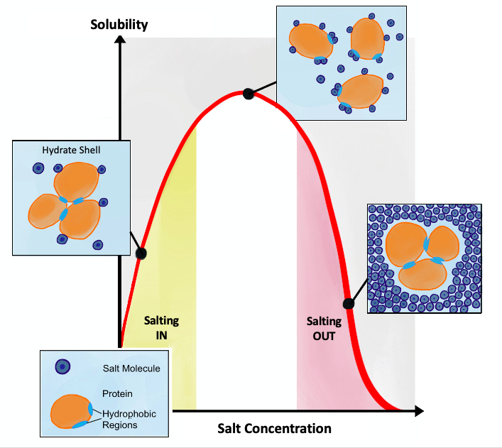

Carbon-dioxide solubility in brines with different salinity and temperature
Carbon-dioxide solubility in brines with different salinity and temperature¶
Written by Svetlana Kyas (ETH Zurich) on Mar 30th, 2022
Salting out is usually used to precipitate large biomolecules such as proteins or DNA. A specific salt concentration can be used to precipitate a target protein. This method is also used to concentrate dilute solutions of proteins. If necessary, the salt can be removed by dialysis.
 |
|---|
Salting in vs. salting out, Source: wikipedia.org |
This tutorial shows how to simulate the solubility of CO2 gas in NaCl brine and its dependence on brine salinity (also called the salting-out effect) and temperature. To perform such a study, we need a chemical system consisting of an aqueous and a gaseous phase. The corresponding equilibrium solvent will also be initialized in the following.
from reaktoro import *
# Initialize a thermodynamic database
db = PhreeqcDatabase("phreeqc.dat")
# Create an aqueous phase automatically selecting all species with provided elements
aqueousphase = AqueousPhase(speciate("H O C Na Cl"))
aqueousphase.setActivityModel(chain(
ActivityModelHKF(),
ActivityModelDrummond("CO2"),
))
# Create a gaseous phase with CO2(g)
gaseousphase = GaseousPhase("CO2(g)")
gaseousphase.setActivityModel(ActivityModelPengRobinson())
# Create the chemical system
system = ChemicalSystem(db, aqueousphase, gaseousphase)
# Create the equilibrium solver
solver = EquilibriumSolver(system)
Next, the temperature and salinity ranges, as well as the pressure for the calculation of the CO2 solubilities, are defined. The resulting pandas.DataFrame contains the amount of carbon dissolved in the aqueous solution as a function of the respective temperature and NaCl concentration.
import numpy as np
import pandas as pd
temperatures = np.arange(25.0, 90.0, 5.0)
molsNaCl = np.array([1.0, 2.0, 4.0])
P = 100.0
df = pd.DataFrame(columns=["T", "amountNaCl", "amountCaq"])
In a loop, we perform equilibrium calculations for different input temperatures and different brine concentrations.
for molNaCl in molsNaCl:
for T in temperatures:
# Initial amount of the CO2 gas
n0CO2g = 10.0
# Define initial chemical state corresponding to the NaCl-brine of the given concentration
state = ChemicalState(system)
state.setTemperature(T, "celsius")
state.setPressure(P, "bar")
state.set("H2O" , 1.0 , "kg")
state.set("CO2(g)", n0CO2g, "mol")
state.set("Na+" , molNaCl , "mol")
state.set("Cl-" , molNaCl , "mol")
# Calculate equilibrium state
res = solver.solve(state)
# Stop if the equilibration did not converge or failed
if not res.optima.succeeded: continue
# Fetch resulting aqueous properties of the chemical state
aqprops = AqueousProps(state)
# Update value ["T", "amountNaCl", "amountCaq"] in the dataframe
df.loc[len(df)] = [T, molNaCl, float(aqprops.elementMolality("C"))]
To visualize the obtained results, we use bokeh plotting library. Below, we plot the solubility of CO2(g) as a function of temperature for different salinities of NaCl-brine.
from bokeh.plotting import figure, show
from bokeh.models import HoverTool
from bokeh.io import output_notebook
from bokeh.models import ColumnDataSource
output_notebook()
hovertool = HoverTool()
hovertool.tooltips = [("amount(Ca) in brine", "@amountCaq mol"),
("T", "@T")]
p = figure(
title="SOLUBILITY OF CO2 IN NACL BRINE",
x_axis_label=r'TEMPERATURE [°C]',
y_axis_label='AMOUNT OF DISSOLVED CO2 [MOL/KGW]',
sizing_mode="scale_width",
plot_height=300)
p.add_tools(hovertool)
colors = ['teal', 'darkred', 'indigo', 'coral']
for molNaCl, color in zip(molsNaCl, colors):
df_NaCl = ColumnDataSource(df[df['amountNaCl'] == molNaCl])
p.line("T", "amountCaq", legend_label=f'{molNaCl} mol of NaCl', line_width=3, line_cap="round", line_color=color, source=df_NaCl)
p.legend.location = 'top_right'
show(p)
As expected, the CO2(g)-solubility decreases with the increase of the temperature. We also see that the solubility of the gas decreases as the salt concentration of the brine increases (also known as the salting-out effect).